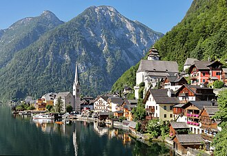

10/28（周三）Hallstatt + Krippenstein（可选组合），晚上 K³
⚠ 排得下（有风险点） 作息：默认 08:00 起、09:00 出门（组合 A）；想 10 点前逛 Hallstatt 就早起（组合 B）
- ✅排得下：组合 A 不用早起，回程有 17:32 / 18:07 火车和 19:00 末班巴士；K³ 晚上可行（最晚约 22:15 到家）
- ⚠组合 B 卡 17:09 末班车很紧；缆车乘坐时间、山上餐厅没核实
今天去哪
Hallstatt 小镇 + Krippenstein 5fingers，顺序二选一；晚上 本人 去 K³ 抱石，另外 3 人回家做饭
必须卡的时间点
| 时间 | 要做的事 |
|---|---|
| 15:00 | Krippenstein 末班上行到 5fingers 那一段 |
| 17:00 / 17:10 | 末班下山：Krippenstein 17:00、Schönbergalm 17:10 |
| 17:09 | Krippenstein 缆车站最后一班车（→ Bad Ischl 17:52） |
| 18:30 | Hallstatt Markt 末班渡轮 |
| 19:00 | Hallstatt Lahn 最后一班巴士（→ Bad Ischl 19:45） |
| 22:00 | K³ 关门（周三 15–22）；最好 22:30 前到家 |
选一个组合（点按钮切换）
09:00 出门 → 走 21′ 到车站 → 10:04 火车（→ 缆车站 10:47）或 10:14 巴士（→ 11:07）→ Krippenstein 5fingers → 下山 → 543 巴士 缆车站 → Hallstatt Lahn（12:49、13:49、14:49、15:49、16:49，10′）→ Hallstatt 小镇 → 回 Bad Ischl：火车 Bahnhst 17:32→17:52 / 18:07→18:48，或巴士 Lahn 19:00→19:45（末班）
这个组合会去的地方（图片，4 处）
圆形图是目的地实景（公开百科条目配图），不是小红书截图。没有实景的用圆标 + 地名。
小红书出处（方便搜原帖；有题目写题目，没有题目写大致内容和作者。截图本身不放上来）：
- 5fingers 观景台：《10月湖区活动（日历图组）》 · 作者 @小鱼漂流（水印）
- Bad Ischl Bahnhof：《🇦🇹 奥地利湖区三天两晚胚胎级攻略》 · 作者 fifi
07:09 巴士 → Hallstatt Lahn 07:54（或 08:04 火车 + 渡轮 → Markt 08:42）→ 小镇 10 点前逛完 → 543 10:58 → 缆车站 11:07 → 5fingers → 16:49 巴士 → Bad Ischl 17:45（末班 17:09）
这个组合会去的地方（图片，3 处）
圆形图是目的地实景（公开百科条目配图），不是小红书截图。没有实景的用圆标 + 地名。
小红书出处（方便搜原帖；有题目写题目，没有题目写大致内容和作者。截图本身不放上来）：
- 5fingers 观景台：《10月湖区活动（日历图组）》 · 作者 @小鱼漂流（水印）
- Hallstatt Bahnhof + 渡轮：《🇦🇹 奥地利湖区三天两晚胚胎级攻略》 · 作者 fifi
- 错过 17:09（只在组合 B 会遇到）：从缆车站步行 2.6 km 37′ 到 Obertraun Dachsteinhöhlen 站 → 火车 18:03→18:48（再晚 19:28→19:52、20:03→20:48）
可以去的地方（大概多久）
| 地方 / 活动 | 大概多久 |
|---|---|
| Hallstatt 小镇：明信片机位、Marktplatz、Beinhaus（10–17，€2） | 2–2.5 小时 |
| Krippenstein：2 段缆车 + 步行 35–40′ 到 5fingers | 连上下约 3–3.5 小时 |
| Welterbespirale（Krippenstein 山顶） | +30 分钟 |
| Hallstatt Höhenweg + Müllerstiege 小环线 | 45–60 分钟 |
| 🧗 本人：K³ 抱石（周三 15–22，学生 €11.50，租鞋 €4） | 2 小时左右 |
真实交通时刻
- Bad Ischl → Krippenstein 缆车站：10:04→10:47（火车 + 巴士）、10:14→11:07、11:14→12:07、12:04→12:47
- 缆车站 → Hallstatt Lahn（543）：12:49、13:49、14:49、15:49、16:49 → +10′
- Hallstatt → Bad Ischl：火车 Bahnhst 17:32→17:52、18:07→18:48；巴士 Lahn 17:48→18:45、19:00→19:45（末班）
- K³：Bad Ischl Bahnhof 步行 2.1 km 28′（或巴士 18:12→Katrinseilbahn 18:21 + 步行约 10′）；晚上没有回程巴士，K³ → Donna Lea 步行 31′
- 例：18:48 到 Bad Ischl → 约 19:20 到 K³ → 抱石到约 21:30 → 约 22:00 到家；坐 19:00 末班巴士 → 19:45 到 → 约 20:15–21:45 抱石 → 约 22:15 到家
这天全部地点的图片（10 处）


（城镇实景）

（城镇实景）


（城镇实景）

（城镇实景）

（城镇实景）
圆形图是目的地实景（公开百科条目配图），不是小红书截图。没有实景的用圆标 + 地名。
小红书出处（方便搜原帖；有题目写题目，没有题目写大致内容和作者。截图本身不放上来）：
- 5fingers 观景台：《10月湖区活动（日历图组）》 · 作者 @小鱼漂流（水印）
- Bad Ischl Bahnhof：《🇦🇹 奥地利湖区三天两晚胚胎级攻略》 · 作者 fifi
这天涉及的地点
- 经典明信片机位（Gosaumühlstraße 北端） 免费；08:00前或16:30后人少（10月底17点左右天黑）
- Müllerstiege / Mühlbach 高处观景 全年；清晨
- Beinhaus 人骨堂 10月每日10–17（未二次核实）
- Salzkammergut Kletterhalle Bad Ischl（K³） 有线上票可在非营业时间攀爬；具体营业时间 unverified
- Donna Lea House（Airbnb，10/27–29 三晚） 入住16:00起，退房10:00前（Google/upper-austria-hotels）
- Bad Ischl Bahnhof
- Hallstatt Bahnhof + 渡轮
- Hallstatt Lahn 巴士站（543）
- Dachstein Krippenstein 缆车站（Obertraun）
- 5fingers 观景台